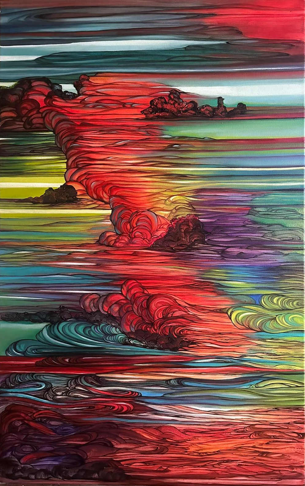

INVISIBLE PATHS

“Invisible Paths” is a solo exhibition by Ksenia Dermenzhi, presented at BEERS London in 2024. The show explores themes of nature, color, and emotional landscapes through dynamic compositions and vivid, layered brushwork.